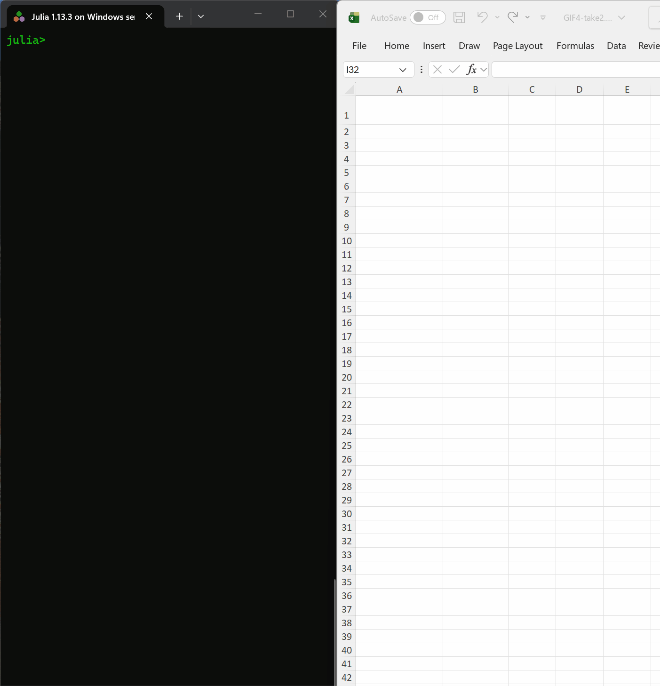

CallFromExcel.jl - call Julia from Excel
Call Julia from Microsoft Excel worksheets and from VBA.
CallFromExcel is an Excel add-in that lets you use any Julia function in a worksheet formula. For example, =JuliaEval("using LinearAlgebra") makes the functions of one of Julia's standard libraries available, then =JuliaCall("eigvals", A1:J10) passes a range to Julia as a matrix and returns its eigenvalues to the worksheet (as complex numbers, if the matrix isn't symmetric) - something Excel has no built-in function for. Keep your front end in Excel, and do the heavy computation in Julia.
- Your own Julia functions can also be worksheet functions in their own right: mark one with
@exceland call it as=jl.my_function(A1, B1)- see Your own worksheet functions. - Keep large or complex Julia objects - a big matrix, a fitted model, a DataFrame - in Julia, and pass them between formulas as handles: short strings such as
jl:Array#17@k3x9that stand for the objects. - A Julia tab on Excel's ribbon starts Julia and loads your Julia files.
- Compatible with Excel's dynamic array formulas.
- Supports 64-bit Excel for Windows (not Mac, not 32-bit Excel).
- Run Julia under either Windows or Linux (via WSL).
- Installation doesn't need admin rights.
- CallFromExcel is the successor to JuliaExcel, with its Excel add-in rewritten from VBA to C# for speed. See Upgrading from JuliaExcel.
Demo
Here's a quick demonstration of CallFromExcel's functions in action.
- See how the Julia session on the left responds to the action in Excel on the right, once
display_results(true)has been called (the formula at B6 does this). - The annotations in brown text ("Formula at...") are to make what's happening in the demo clearer. They won't appear when you try CallFromExcel for yourself!
- Replay the GIF by refreshing your browser (F5).
